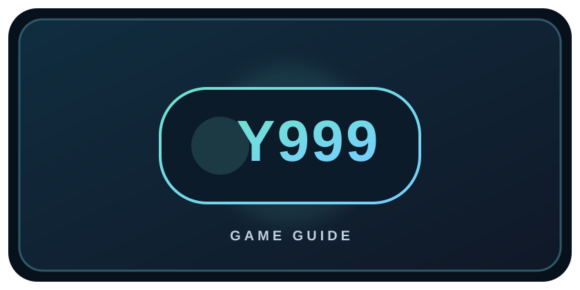

Introduction to Y999 Game
People searching for “Y999 Game download in Pakistan” may want to learn about an online gaming platform before deciding what to do. This page provides general, independent information. It is not an official Y999 website, a recommendation to deposit money, or a promise that an app will provide income.
Before signing up or installing anything, check who publishes the service, what permissions it asks for, how it handles personal data, and whether it is permitted in your location. Take time to read the current rules rather than relying on promotional claims.

What is Y999 Game?
Y999 is included in this directory as a third-party online gaming platform. The games, app availability, registration requirements, and other features may change. We cannot confirm the platform’s current services, reliability, or legal status, so verify all details with trustworthy sources before making a decision.
If a platform involves deposits, wagers, or cash prizes, it should not be treated as a dependable way to earn money. You may lose money, and a displayed balance does not guarantee a successful withdrawal.
Y999 Features: What to Check
We cannot confirm which features are currently offered. Before using any third-party platform, look for clear, up-to-date information about:
Check the available games and understand how each one works.
Review age requirements and regional availability.
Read the privacy policy and check requested app permissions.
Understand fees and payment terms, and verify support contacts.
How to Check a Y999 Download Safely
We cannot confirm an official or safe Y999 download link. Use these checks before installing an app:
- Look in your device’s official app store and carefully verify the publisher and app listing.
- Independently verify the publisher’s website and contact details; do not assume that a link in an ad or message is genuine.
- Read recent reviews, privacy details, requested permissions, and the terms before registering.
- Avoid APK files from unknown websites or messages. Never turn off device security protections to install an unverified file.
- Do not share passwords, one-time codes, identity documents, or payment details unless you have verified the service and understand why they are needed.
If you cannot verify the publisher or download source, do not install the app. Check current local laws and age requirements first.
Conclusion
Y999 is a third-party directory listing. This guide cannot confirm that it is a real earning app, that it is safe, or that it is legally available in Pakistan. Be cautious of claims promising easy or guaranteed money. Verify the source and terms, protect your personal information, and never risk money you cannot afford to lose.
Frequently Asked Questions
Is Y999 a real earning app?
We cannot verify that claim. Games involving money or prizes do not guarantee income, and users may lose money. Check current terms and reliable independent information.
Is Y999 available and legal in Pakistan?
Availability and legal requirements can change. We cannot confirm the legal status; check current Pakistani laws or consult a qualified local source before using a real-money gaming service.
Where can I safely download Y999?
We cannot verify an official download source. Prefer a trusted app store, confirm the publisher, and avoid APK files or links from unfamiliar sources.
Can I earn guaranteed money from Y999?
No game should be treated as guaranteed income. Outcomes and payment terms can vary, and you could lose money. Do not deposit based on promises of guaranteed returns.
Does Gaming Arena operate Y999?
No. Gaming Arena is an independent directory and does not operate, verify, or control third-party platforms, user accounts, payments, or outcomes.